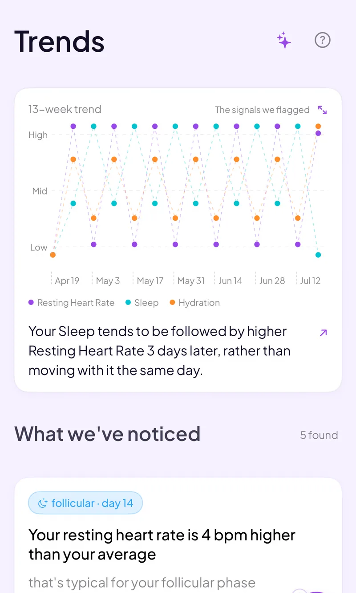

A mood tracker that knows what day of your cycle it is.
Log how you feel in seconds. Veya tags each entry with your cycle phase and sets it next to your sleep and energy, so you can see what your own patterns look like across the month.
Download VeyaPrefer a browser? Try it in the browser at app.myveya.com, on any device.

On a computer?
Scan to download on your phone.

Built for mood tracking across your cycle
Daily mood log
Pick how you feel and move on. Logging takes seconds, which is what keeps a daily habit going past week three.
Cycle phase overlay
Each mood entry is tagged with the phase you were in, so you can see how your mood lines up with your cycle over several months.
Sleep and energy alongside
Mood sits next to your sleep, energy, fitness, and nutrition, and Veya looks for what moves with what.
Patterns from your own data
Veya surfaces real patterns from your history, like what tends to make the harder days harder, instead of generic tips.
Health Clues
Save a hunch about your own mood and Veya tests it against your data over time.
Log by voice
Say how you feel instead of typing it, from your phone or your Apple Watch.
See how it all connects
Most apps keep mood in one corner and your cycle in another. Veya keeps your mood, cycle, sleep, energy, and wearable data together and shows the connections, so a low day isn't a mystery you solve from memory. Compare approaches in our mood tracking app guide, or read how to track cycle, mood, and symptoms in the same app. Looking at your mood through a cycle lens specifically? Try cycle syncing.
What you can log
Private by default
Mood entries are personal. Your data is encrypted and stored securely, and Veya doesn't run ads or sell your data to third parties. You can export or delete what you've logged at any time.
Frequently asked questions
See what day of your cycle your mood is on
Log today's mood and let Veya connect it to your phase, sleep, and energy.
Download VeyaPrefer a browser? Try it in the browser at app.myveya.com.
Tracking for other conditions
PCOS tracking · Endometriosis tracking · Perimenopause tracking · Menopause tracking · IVF tracking · Apple Watch cycle tracking · Cycle syncing · All conditions